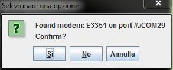
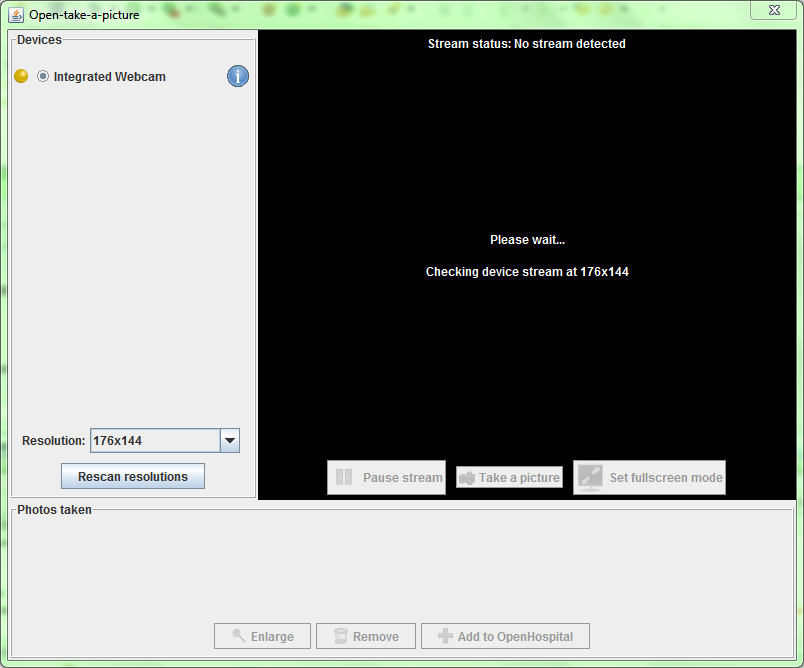
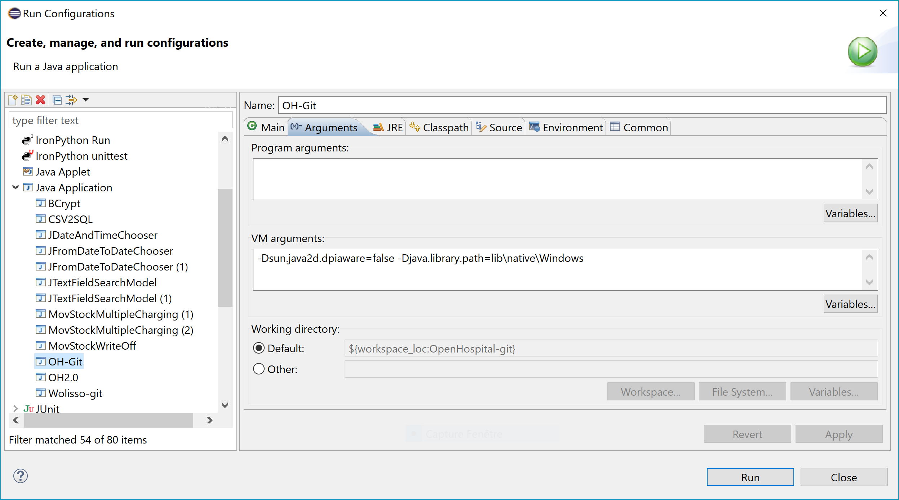
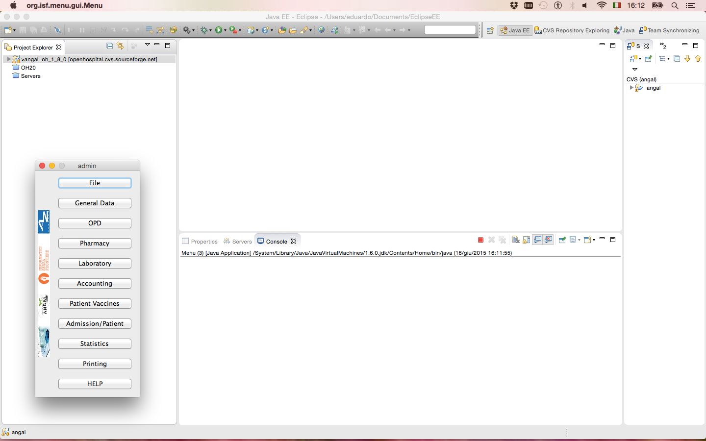

Informatici Senza Frontiere Onlus, 2022
Informatici Senza Frontiere Onlus, 2022
Administrator’s Guide, © 2022 by Informatici Senza Frontiere Onlus
Policies is made available under a Creative Commons Attribution-ShareAlike 4.0 International License: http://creativecommons.org/licenses/by-sa/4.0/.
Open Hospital
1 Introduction
OH - Open Hospital (https://www.open-hospital.org/) is a free and open-source Electronic Health Record (EHR) software application. Open Hospital is deployed as a desktop application that can be used in a standalone, single-user mode (PORTABLE mode) or in a client/server network configuration (CLIENT mode), where multiple clients and users connect to the same database server.
Open Hospital is developed in Java and it is based on open-source tools and libraries; it runs on any computer, requires low resources, and is designed to work without an internet connection.
Open Hospital is the first of a set of software applications that ISF[1] has developed to support the information management and the activities of hospitals and health centers in the simplest manner possible, by providing tools for the administrative operations (like registering patients, manage laboratory analysis and pharmaceutical stocks) and to produce detailed statistics and reports. It was first deployed in 2006 at the St. Luke Hospital in Angal (Uganda) and it is now used in dozens of different locations around the world.
1.1 Main Features
OH - Open Hospital features include:
-
Pharmacy management
-
Laboratory management
-
OPD management
-
Patient admission and discharge management
-
Pregnancy management
-
Malnutrition control management
-
Vaccines database
-
Patient billing support
-
Therapy management
-
Appointment scheduling
-
Internal communication
-
Statistics and printing
For a detailed description of these features please refer to the Open Hospital User’s Guide.
1.2 Hardware requirements
Minimum hardware requirements for running OH:
-
PC / Notebook with dual core CPU
-
2 Gb RAM (4 Gb recommended)
-
4 Gb free hard disk space (8 Gb recommended)
-
Network adapter (for client/server configuration)
These specifications are for the OH application only; database server specifications may vary accordingly to the different use cases.
1.3 Software requirements
Minimum Operating System version required for running OH:
-
Windows 7 (Windows 10/11 recommended)
-
Ubuntu 18.04 (Ubuntu 20.04 recommended)
32 bit (i686) and 64 bit (x86_64) architectures are supported.
1.5 Download
Open Hospital official releases can be downloaded from GitHub: https://github.com/informatici/openhospital/releases/latest
More information can be found on the Open Hospital website: https://www.open-hospital.org/download
1.6 Unpack
| Do not double-click on the oh.bat startup script without unzipping the package first! |
A downloaded compressed archive can be opened on most operating systems by just double-clicking on it. In this way, the archive is just opened, but not uncompressed. Let’s say it is open for "inspection" only.
In order to work with the application you need to unzip (uncompress) the downloaded package in a folder of your choice.
To uncompress the package: Right-click on the package → Extract all/here
Alternative method: uncompress package from command line
-
on Linux:
tar zxvf OpenHospital-v[VERSION]-linux_[ARCH]-[portable].tgz # portable version unzip x OpenHospital-v[VERSION]-linux_multiarch.zip # multiarch client version
-
on Windows:
unzip OpenHospital-v[VERSION]-windows_[ARCH]-[portable].zip # portable version unzip OpenHospital-v[VERSION]-multiarch-client.zip # multiarch client version
After uncompressing the package, browse to the extracted directory (example given for version 1.11.4):
-
on Linux:
cd /home/OH/OpenHospital-v1.11.4
-
on Windows:
cd C:\Users\OH\OpenHospital-v1.11.4
| You need read/write permission on the selected folder. |
| Do not run OH by double-clicking on the oh.bat startup script without unzipping the package first! |
1.7 Documentation
In the following chapters, all the information needed to install, configure, deploy, run and maintain an Open Hospital installation is presented, including procedures on how to enable and disable features as well as managing users and groups in a multi user environment. More information can be found on the Open Hospital web site https://www.open-hospital.org.
| The information needed to use the OH software is not included in this manual; please refer to the Open Hospital User’s Guide. |
2 Installation
Open Hospital is a client application that can be used in two different ways:
-
2.1 OH - CLIENT mode: multi computers setup, with a central database (requires a little IT knowledge)
-
2.2 OH - PORTABLE mode: single computer setup, with inbuilt databases (click and run)
| Portable mode can be also used to test the application. |
2.1 OH - CLIENT mode
In this mode, the application will need a Server with a DBMS[2] to store the data.
The free and open-source MariaDB[3] is the preferred database server.
The typical client/server, networked (LAN) configuration is shown in the following figure:

The Administrator/Installer tasks are hereby listed:
-
Server
-
Download the Open Hospital package for the selected Operating System (see Prerequisites)
-
Unpack the downloaded package on the server machine by uncompressing the archive in a folder of your choice
-
Install and configure MariaDB/MySQL on the server/computer that will act as the database server
-
Create the database through the execution of a script found in the sql/ folder
-
-
Clients
2.1.1 Prerequisites - Software compatibility matrix
Before starting, check the following software compatibility matrix, to verify the external software versions needed to run Open Hospital and the current available extended features for every version, architecture, and operating system.
| Open Hospital compatibility matrix | ||||||||
|---|---|---|---|---|---|---|---|---|
OH version |
MariaDB / MySQL (community version) |
Java JRE version (*) |
O.S. |
O.S. arch |
JAVA/JRE arch |
Special Features |
||
DICOM (*) |
SMS (gsm) |
Webcam |
||||||
1.12.0 |
10.2.44 / n.a. |
zulu11.58.23-ca |
Ubuntu 21.10 |
x64 |
64bit |
v |
x |
v |
Windows 7/10/11 (**) |
x64 |
64bit |
x |
v |
v |
|||
10.2.41 / n.a. |
zulu11.58.25-ca |
Windows 7/10/11 (**) |
x64 |
32bit |
v |
v |
v |
|
Windows 7/10 (**) |
i386 |
32bit |
v |
v |
v |
|||
1.11.4 |
10.2.42 / n.a. |
zulu8.60.0.21 |
Ubuntu 21.10 |
x64 |
64bit |
v |
x |
v |
Windows 7/10/11 (**) |
x64 |
64bit |
x |
v |
v |
|||
Windows 7/10/11 (**) |
x64 |
32bit |
v |
v |
v |
|||
Windows 7/10 (**) |
i386 |
32bit |
v |
v |
v |
|||
1.11.3 |
10.2.42 / n.a. |
zulu8.60.0.21 |
Ubuntu 21.10 |
x64 |
64bit |
v |
x |
v |
Windows 7/10/11 (**) |
x64 |
64bit |
x |
v |
v |
|||
Windows 7/10/11 (**) |
x64 |
32bit |
v |
v |
v |
|||
Windows 7/10 (**) |
i386 |
32bit |
v |
v |
v |
|||
1.11.2 |
10.2.41 / 5.7.35 |
zulu8.58.0.13 |
Ubuntu 21.10 |
x64 |
64bit |
v |
x |
v |
Windows 7/10/11 (**) |
x64 |
64bit |
x |
v |
v |
|||
Windows 7/10/11 (**) |
x64 |
32bit |
v |
v |
v |
|||
Windows 7/10 (**) |
i386 |
32bit |
v |
v |
v |
|||
1.11.1 |
10.2.41 / 5.7.35 |
zulu8.58.0.13 |
Ubuntu 21.10 |
x64 |
64bit |
v |
x |
v |
Windows 7/10/11 (**) |
x64 |
64bit |
x |
v |
v |
|||
Windows 7/10/11 (**) |
x64 |
32bit |
v |
v |
v |
|||
Windows 7/10 (**) |
i386 |
32bit |
v |
v |
v |
|||
1.11.0 |
10.2.40 / 5.7.35 |
zulu8.56.0.21 |
Ubuntu 21.04 |
x64 |
64bit |
v |
x |
v |
Ubuntu 18.04 |
i386 |
32bit |
v |
? |
? |
|||
Windows 7/10 (**) |
x64 |
64bit |
x |
v |
v |
|||
Windows 7/10 (**) |
x64 |
32bit |
v |
v |
v |
|||
Windows 7/10 (**) |
i386 |
32bit |
v |
v |
v |
|||
1.10.0 |
n.a. / 5.1.x |
1.6 |
Ubuntu 20.04 |
x64 |
64bit |
v |
? |
v |
Ubuntu 18.04 |
i386 |
32bit |
v |
x |
? |
|||
Windows 7/10 |
x64 |
64bit |
x |
v |
v |
|||
Windows 7/10 |
x64 |
32bit |
v |
v |
v |
|||
Windows 7/10 |
i386 |
32bit |
v |
v |
v |
|||
1.9.1 |
n.a. / 5.0.x |
1.6 |
Ubuntu 20.04 |
x64 |
64bit |
v |
? |
v |
Ubuntu 18.04 |
i386 |
32bit |
v |
? |
? |
|||
Windows 7/10 |
x64 |
64bit |
x |
v |
v |
|||
Windows 7/10 |
x64 |
32bit |
v |
v |
v |
|||
Windows 7/10 |
i386 |
32bit |
v |
v |
v |
|||
(*) |
Before 1.12.0, with Java 9+ loading a JPG/JPEG as DICOM image may not work |
(**) |
Windows Powershell 5.1 is required |
v |
working |
x |
not working |
? |
not tested |
n/a |
not applicable |
last updated |
2021.09.16 |
2.1.2 Java Runtime Environment (JRE)
Depending on the operating system, there are different ways to install the Java Runtime Environment (JRE). The oh.sh / oh.bat scripts can be used to download and install the latest JRE available; it is also possible to install it manually, following the specific instructions for the operating system being used.
| See Software Compatibility Matrix to identify the correct Java version. |
2.1.3 Database Server
Depending on the operating system, there are several software tools to install and manage a MariaDB/MySQL database server. In most cases just a standard installation package of the software is needed, paying attention to configuration options during the installation process.
| See Software Compatibility Matrix to identify the correct MariaDB / MySQL version. |
| MariaDB is the preferred alternative for the DBMS. |
2.1.3.1 MariaDB/MySQL - Server installation
Please referer to the latest MariaDB/MySQL Server online documentation for download[4] and installation[5] information while using this document.
on a Linux machine: during the installation, a “root” password must be defined; it is very important to choose it carefully and to keep it safe.
on a Windows machine: launch the installation and pay attention to the following steps:
-
Custom Setup
-
Install all components except Development Components
-
Select Modify password for database user 'root', choose the root password, and keep it safe
-
Select Enable access from remote machines for 'root' user
-
Select UTF8 as the default charset for Best Support For Multilingualism
-
Select Install as service
-
Select Enable networking and take note of the selected Port Number
| MariaDB installer does not include the bin directory in the Windows PATH environment variable; it must be added manually to the Windows system variable PATH. |
To check if the server is active and running, open a terminal window (command prompt) and type the following command:
# mysql –u root -p
Enter password:
The terminal should reply with the MySQL client command line prompt:
MariaDB>
The prompt means that a successful connection to the database server instance has been established.
| If the terminal does not reply as above most probably during installation the Include Bin Directory in Windows PATH option was not selected and therefore Windows can not find the mysql command. If this is the case add the path manually by searching "system variables" in the Control Panel or append the full path to the "mysql" command (e.g., "C:\Program Files\MySQL\MySQL Server 5.0\bin\mysql" [with the quotes]). Another option is to uninstall and reinstall MySQL with the Include option selected. |
2.1.3.2 MariaDB/MySQL - Configuration
Please use the following configuration values for MariaDB/MySQL server in my.cnf config file. Values can be adjusted and adapted to the hardware resources available. Config file can be my.ini or my.cnf; default for Windows MariaDB is my.ini located at "C:\Program Files\MariaDB-[VERSION]\data\"
# # Configuration to be inserted below last row of [mysqld] section # sql_mode=STRICT_TRANS_TABLES,NO_ZERO_IN_DATE,NO_ZERO_DATE,ERROR_FOR_DIVISION_BY_ZERO,NO_AUTO_CREATE_USER,NO_ENGINE_SUBSTITUTION max_allowed_packet = 4M # must match the value used on clients for DICOM_SIZE skip-external-locking key_buffer_size = 16M thread_cache_size = 64 lower_case_table_names = 1 table_open_cache = 64 tmp_table_size = 16M read_buffer_size = 256K read_rnd_buffer_size = 512K join_buffer_size = 2M sort_buffer_size = 2M myisam_sort_buffer_size = 8M [mysqldump] quick max_allowed_packet = 16M [mysql] no-auto-rehash [isamchk] key_buffer = 16M sort_buffer_size = 16M read_buffer = 2M write_buffer = 2M [myisamchk] key_buffer = 16M sort_buffer_size = 16M read_buffer = 2M write_buffer = 2M
2.1.3.3 MariaDB/MySQL - Networking
If deployed in a client-server, networked configuration, the database server must be configured to listen on the network interface connected to the local LAN; this can be achieved by editing the MariaDB/MySQL’s config file, my.cnf, and setting the "bind-address" parameter. For example, if you want the database server to listen on all the available network interfaces / IP addresses:
Change:
# Instead of skip-networking the default is now to listen only on
# localhost which is more compatible and is not less secure.
bind-address = 127.0.0.1To:
# Instead of skip-networking the default is now to listen only on
# localhost which is more compatible and is not less secure.
bind-address = 0.0.0.0In this way, the database server listens on any IP address (0.0.0.0) configured on the server and can serve the connecting clients.
In is also possible to specify a specific IP address, e.g:
bind-address = 192.168.1.100
2.1.4 OH - Database creation
To create the Open Hospital database, a MySQL client and a set of SQL script files found under the sql/ folder are needed.
On a Microsoft Windows® system, MySQL Workbench® can be used as a client to connect to the database server and perform the needed tasks, while on Linux based systems the MySQL Administrator and MySQL Query Browser tools can be used.
The suggested approach is to use the command-line MariaDB/MySQL client which uses the same commands and syntax for every platform.
Open a terminal and navigate to the sql/ folder (e.g.):
C:\WINDOWS> cd C:\Users\OH\OpenHospital-v1.11.4\sql
C:\Users\OH\OpenHospital-v1.11.4\sqland run the following command to connect to the database server (e.g.):
C:\Users\OH\OpenHospital-v1.11.4\sql> mysql -u root -p [-h hostname/ip address]
Enter password: *****using the ‘root’ password chosen during the installation process. The terminal should reply with the MariaDB client command line prompt:
Welcome to the MariaDB monitor. Commands end with ; or \g.
Your MariaDB connection id is 13
Server version: 10.2.43-MariaDB MariaDB Server
Copyright (c) 2000, 2018, Oracle, MariaDB Corporation Ab and others.
Type 'help;' or '\h' for help. Type '\c' to clear the current input statement.
MariaDB [(none)]>now we are ready to create the database user (isf) with password, the main OH database and grant the necessary permissions with the following SQL commands:
MariaDB> CREATE DATABASE oh CHARACTER SET utf8;
CREATE USER 'isf'@'localhost' IDENTIFIED BY 'isf123';
CREATE USER 'isf'@'%' IDENTIFIED BY 'isf123';
GRANT ALL PRIVILEGES ON oh.* TO 'isf'@'localhost';
GRANT ALL PRIVILEGES ON oh.* TO 'isf'@'%';
MariaDB> FLUSH PRIVILEGES;To check if the database has been correctly created, enter the following command:
MariaDB> show databases;
+--------------------+
| Database |
+--------------------+
| information_schema |
| mysql |
| oh |
| performance_schema |
+--------------------+The next step is to launch the main SQL database creation script with the command:
MariaDB> source create_all_en.sql| The data can be installed in different languages by using the related "create_all_xx.sql" file or with demo data using the "create_all_demo.sql" file (English only). |
| If the error message "ERROR 1148 (42000): The used command is not allowed with this MySQL version" appears the "local infile" command must be enabled on the client by logging in again and specifying the "--local-infile=1" parameter after the "-p"; thus "mysql -u root -p --local-infile=1". |
The SQL script creates the OH database structure and populates it with default data.
The ‘isf’ user, different from the ‘root’ one, is the user that the Open Hospital software uses to connect to the database and its password must be changed immediately with the command:
MariaDB> SET PASSWORD FOR 'isf'@'%' = PASSWORD('new-password-here');
Query OK, 1 row affected (0.00 sec)
Rows matched: 1 Changed: 1 Warnings: 0And then:
MariaDB> FLUSH PRIVILEGES;
Query OK, 0 rows affected (0.00 sec)MariaDB> quit;| Remember to set the updated database password also in the Open Hospital configuration files and startup scripts oh.sh / oh.ps1. |
2.1.5 OH - CLIENT configuration
To set up the database connection for Open Hospital, edit and configure the database settings in the oh.sh / oh.ps1 startup scripts.
Database settings are:
-
the IP address of the the MariaDB/MySQL database server hosting the the Open Hospital database. Replace “localhost” with the server IP address (e.g., 192.168.1.100)
-
the TCP Port Number of the database server - default is “3306"
-
the Database name of the OH installation - default is "oh"
-
the Database user of the OH database - default is "isf"
-
the Database password associated with the user
Please set them according to the values specified in the installation phase:
in oh.sh / oh.ps1 scripts
$script:MYSQL_SERVER="127.0.0.1"
$script:MYSQL_PORT=3306
$script:MYSQL_ROOT_PW="tmp2021oh111"
$script:DATABASE_NAME="oh"
$script:DATABASE_USER="isf"
$script:DATABASE_PASSWORD="isf123"After you can generate the config files: on Linux execute oh.sh -g, on Windows launch oh.bat and choose the option g.
Alternative method: you can first generate the config files with the -g and after directly modify the database.properties and log4j.properties configuration files, located in the oh/rsc/ resource folder, without generating them every time.
Please set them according to the values specified in the installation phase:
in database.properties config file
jdbc.url=jdbc:mysql://127.0.0.1:3306/oh
jdbc.username=isf
jdbc.password=isf123in log4j.properties config file
log4j.appender.DB.URL=jdbc:mysql://127.0.0.1:3306/oh?autoReconnect=true
log4j.appender.DB.user=isf
log4j.appender.DB.password=isf123| These settings are required for every Open Hospital installation/client. |
More information on these files can be found in the 3. Configuration section.
2.1.6 OH - Startup and run
The Open Hospital software is now ready to be run by executing the proper launcher command:
-
on a Linux machine: oh.sh -C (CLIENT mode)
-
on a Windows machine: oh.bat (Select CLIENT mode from the interactive menu)
If everything is configured correctly, the Open Hospital main splash screen is presented:
And then the main Menu:
It is possible to create a shortcut (link) to the executable script on the desktop, in the Programs Menu or wherever is useful by using the provided icon “oh.ico” that is found in the package.

On Linux, it might be necessary to set the correct permissions to the oh.sh script:
chmod 755 ./oh.sh
| Remember to review your setup in the Open Hospital configuration files and startup scripts oh.sh / oh.ps1. |
2.2 OH - PORTABLE mode
Open Hospital is a Java software program and it is portable by definition. The PORTABLE mode described in this chapter refers to the possibility of using OH as a self contained package that includes Java, MariaDB/MySQL Server and all the data, without requiring any software installation. The package can be used on a single computer and used everywhere just by copying a folder - even onto an USB stick - carrying together all the saved data.
Pre-configured "Portable" packages are available for Windows and Linux; see the Download section for more details.
Since the JRE and MariaDB/MySQL are not platform-independent and are provided in different versions and architectures, there exists:
-
Open Hospital - portable for Linux platforms (embedding Java JRE and MariaDB for Linux, 32 or 64bit)
-
Open Hospital - portable for Windows platforms (embedding Java JRE and MariaDB for Windows, 32 or 64bit)
Once the required version is downloaded, the application can be started by launching the script inside the package:
-
oh.sh in the Linux version
-
oh.bat in the Windows version
No other configuration is needed. Additional options can be shown by executing:
-
on Linux: oh.sh -h
-
on Windows: oh.bat and choose among the available options. See oh.bat -h for legacymode help.
| To use Open Hospital in PORTABLE mode for Linux from a USB key it is required that the file permissions in the archive remain unchanged once extracted, otherwise the launcher cannot launch or use the application in an appropriate manner. |
| Important: the PORTABLE mode is meant to try or test the software or to be used in a facility (like a dispensary) where only a single computer is available. If the facility is large and more clients/operators need to work on the same data, the full installation (client/server) in a networked architecture is recommended. |
Running OH - Quickstart
Common to all Operating Systems / architectures
-
Download Open Hospital package for the desired architecture
-
Unzip/untar the package
-
Browse to the extracted folder
Linux
-
start OH by running ./oh.sh
-
to see available options, run ./oh.sh -h
---------------------------------------------------------
| |
| Open Hospital | OH |
| |
---------------------------------------------------------
lang en | arch x86_64 | mode PORTABLE | log level INFO
---------------------------------------------------------
Usage: oh.sh [ -l en|fr|it|es|pt ]
-C start OH in CLIENT mode (client / server configuration)
-P start OH in PORTABLE mode
-d start OH in debug mode
-D start OH with Demo data
-g generate configuration files
-G setup GSM
-h show this help
-i initialize/install OH database
-l set language: en|fr|it|es|pt
-s save OH database
-r restore OH database
-t test database connection (CLIENT mode only)
-v show OH software version and configuration
-X clean/reset OH installationWindows
-
double click on the oh.bat batch file and choose among available options:
---------------------------------------------------------
| |
| Open Hospital | OH |
| |
---------------------------------------------------------
lang en | arch x86_64 | mode PORTABLE/CLIENT | log level INFO
Usage: oh.ps1 [ -lang en|fr|it|es|pt ]
[ -mode PORTABLE|CLIENT ]
[ -loglevel INFO|DEBUG ]
[ -dicom on|off ]
[ -interactive on|off ]
[ -generate_config on|off ]
C start OH in CLIENT mode (client / server configuration)
P start OH in PORTABLE mode
d start OH in debug mode
D start OH in Demo mode
g generate configuration files
G setup GSM
i initialize / install OH database
l set language: en|fr|it|es|pt
s save OH database
r restore OH database
t test database connection (Client mode only)
v show OH software version and configuration
X clean/reset OH installation
q quitNote: The oh.bat launches the oh.ps1 startup file automatically. The script presents the interactive menu that can be used to setup and choose how to run Open Hospital.
→ To manually run oh.ps1 (powershell script):
-
right-click on oh.ps1 → Properties → General → Security
-
select "Unblock"
-
right click on oh.ps1 and select "Run with Powershell"
-
if asked for permission to execute the script select "Allow"
-
choose among available options
It might be necessary to set the correct permissions / exclusions also in the Windows Security Center, to allow OH to communicate on the MySQL / MariaDB local TCP port.
→ To run oh.ps1 directly from command line:
powershell.exe -ExecutionPolicy Bypass -File ./oh.ps1 [options]→ To run oh.ps1 with command line options (example):
./oh.ps1 -lang it -mode PORTABLE -loglevel DEBUG -dicom off -interactive off -generate_config onWindows - create startup shortcut
Follow these instruction to create a Windows OH launch icon on desktop:
Method 1 (with launch parameters configured in oh.ps1) - Rigth click on Desktop - New Shortcut - Browse to OH folder location and select oh.bat - Assign a name to the shortcut - Right click on the shortcut and select Properties - Change icon - Specify a different file - Browse to OH folder location and select oh.ico - Apply
Method 2 (with launch parameters stored on execution command) - Rigth click on Desktop - New Shortcut - Browse to OH folder location and select oh.ps1 - Assign a name to the shortcut - Right click on the shortcut and select Properties - Change icon - Specify a different file - Browse to OH folder location and select oh.ico - Modify Target with
C:\Windows\System32\WindowsPowerShell\v1.0\powershell.exe -ExecutionPolicy Bypass -File ./oh.ps1-
Apply
Option parameters can be added at the end of Target string separated by spaces, example:
C:\Windows\System32\WindowsPowerShell\v1.0\powershell.exe -ExecutionPolicy Bypass -File ./oh.ps1 -loglevel DEBUGWindows - legacy mode
It’s also possible to start Open Hospital with the legacy batch file (old oh.bat behaviour): - open cmd.exe, browse to the OH installation directory and run .\oh.bat -legacymode - to see available options in legacymode, run .\oh.bat -h
Options
-
C start Open Hospital in CLIENT mode, usually when an external database server is used (Client / Server configuration)
-
P start Open Hospital in PORTABLE mode, where data is saved locally
-
d start OH in DEBUG mode - useful to debug errors or bugs by logging more extended informations to log file
-
D start OH with Demo data - loads a demo database in order to test the software
-
g generate OH configuration files (oh/rsc/\*.properties) and exit
-
G setup GSM modem to enable sms interaction
-
i initialize / install OH database
-
l set local language: en|fr|it|es|pt
-
s save / dump the Open Hospital database in sql format
-
r restore Open Hospital database from backup or external sql file: user will be prompted for input sql file
-
t test database connection to the configured database server (Client mode only)
-
v show Open Hospital external software version and configuration
-
X clean/reset OH installation by deleting all data and configuration files → use with caution ←
-
q quit (windows only)
-
h help (linux only)
Script configuration
Some advanced options can be configured manually by editing the scripts (oh.sh and oh.ps1 - do not modify oh.bat unless legacymode is used) and setting the specific script variables. This might also be useful to set different combinations of options (language, debug level, …) for specific needs.
OH directory path
############## OH general configuration - change at your own risk :-) ##############
# -> OH_PATH is the directory where Open Hospital files are located
# OH_PATH="c:\Users\OH\OpenHospital\oh-1.11"Config file generation
It is possibile to set the GENERATE_CONFIG_FILES option to "on" to regenerate the OH configuration files at startup (this is also possibile by selecting the g script option). The default is set to off, so the configuration files are not regenerated and overwritten at every startup. This is useful for production environment where the configuration is fixed.
# set GENERATE_CONFIG_FILES=on "on" to force generation / overwriting of configuration files:
# data/conf/my.cnf and oh/rsc/*.properties files will be regenerated from the original .dist files
# with the settings defined in this script.
#
# Default is set to "off": configuration files will not be generated or overwritten if already present.
#
#GENERATE_CONFIG_FILES="off" # linux
#$script:GENERATE_CONFIG_FILES="off" # windowsDistribution type - CLIENT | PORTABLE
############## OH general configuration - change at your own risk :-) ##############
OH_MODE=PORTABLE # set functioning mode to PORTABLE | CLIENT # linux
$script:OH_MODE="PORTABLE" # windowsDemo mode
# set DEMO_DATA to on to enable demo database loading - default set to off
#
# -> Warning -> __requires deletion of all portable data__
#
DEMO_DATA=off # linux
#$script:DEMO_DATA="off" # windowsInterface and software language:
# Language setting - default set to en
#OH_LANGUAGE=en fr es it pt # linux
#$script:OH_LANGUAGE="en" # fr es it pt # windows(Windows only) Enable / disable DICOM features
# enable / disable DICOM (on|off)
#$script:DICOM_ENABLE="off"Log level / debug mode
# set log level to INFO | DEBUG - default set to INFO
#LOG_LEVEL=INFO # linux
#$script:LOG_LEVEL="INFO" # windowsEnable system wide JAVA
# set JAVA_BIN
# Uncomment this if you want to use system wide JAVA
#JAVA_BIN=`which java` # linux
#$script:JAVA_BIN="C:\Program Files\JAVA\bin\java.exe" # windowsDatabase and software configuration
If a database server hostname/address is specified (other then localhost), OH can be started in CLIENT mode and used in a client/server / LAN environment.
############## OH local configuration - change at your own risk :-) ##############
# Database
MYSQL_SERVER=localhost
MYSQL_PORT=3306
MYSQL_ROOT_PW="xxxxxxxxxx"
DATABASE_NAME=oh
DATABASE_USER=isf
DATABASE_PASSWORD="xxxxx"
DICOM_MAX_SIZE="4M"
DICOM_STORAGE="FileSystemDicomManager" # SqlDicomManager
DICOM_DIR="data/dicom_storage"
OH_DIR="oh"
OH_DOC_DIR="../doc"
OH_SINGLE_USER="yes" # set "no" for multiuser
CONF_DIR="data/conf"
DATA_DIR="data/db"
BACKUP_DIR="data/dump"
LOG_DIR="data/log"
SQL_DIR="sql"
TMP_DIR="tmp"
LOG_FILE=startup.log
DB_DEMO="create_all_demo.sql"
LOG_FILE=startup.log
OH_LOG_FILE=openhospital.log(Windows only) Enable interactive mode
# Interactive mode
# set INTERACTIVE_MODE to "off" to launch oh.ps1 without calling the user
# interaction menu (script_menu). Useful if automatic startup of OH is needed.
# In order to use this mode, setup all the OH configuration variables in the script
# or pass arguments via command line.
$script:INTERACTIVE_MODE="on"Default directory structure
The scripts takes care of creating all the needed data directories and configuration files. Everything is also parametric and user adjustable in the scripts with variables (or via command line options). The default folder structure is now clean, simple and common to all distros:
/oh -> Open Hospital distribution
/sql -> containing the SQL creation scripts
/data/conf -> configuration files for database (MariaDB / MySQL)Created at runtime:
/tmp
data/db
data/log
data/dicom_storageExternal software package downloaded at first run:
Mariadb 10.2.x server
Java JRE, Zulu or OpenJDK distributionDocumentation
Administrator and User manuals are available in the doc folder.
Known issues
If you experience problems in starting up the script, avoid long folder path and path with special characters / spaces in it.
Linux
-
If you get one of these errors:
Error on creating OH Database error while loading shared libraries: libncurses.so.5.
Error: MySQL root password not set! ExitingYou have to install the ncurses librares, on Ubuntu:
sudo apt-get install libncurses5-
If you get this error:
Error Initializing MySQL database on port 3306 error while loading shared libraries: libaio.so.1.You have to install the libaio libraries, on Ubuntu:
sudo apt-get install libaio1-
If you select languages en-fr-it, a ICD10 patologies subset is loaded at startup, languages es-pt don’t.
Windows
Powershell minimun version 5.1 is required to run oh.ps1. To install Powershell 5.1 go to https://www.microsoft.com/en-us/download/details.aspx?id=54616
Dicom functionalities are only available on 32bit JAVA environment. If DICOM is needed, 32bit jre is mandatory. If you need DICOM on Windows 64 bit set DICOM_ENABLE="on" in the script.
If you get this error:
+ CategoryInfo : NotSpecified: (:) [], PSSecurityException
+ FullyQualifiedErrorId : RuntimeException or UnauthorizedAccess-
Start Windows PowerShell with the "Run as Administrator" option. Only members of the Administrators group on the computer can change the execution policy. Enable running unsigned scripts by entering:
set-executionpolicy remotesigned-
You might also be required to enable access on Windows Firewall to oh.ps1 and/or to the TCP port used for the local database (PORTABLE mode).
Windows - legacy mode
(*) If you are using oh.bat in legacy mode, you might have to download and unzip java ad mysql manually. In order to download and unzip Java:
-
download the JRE - .zip version
-
unzip the downloaded file into the base directory where OpenHospital has been placed.
In order to download and unzip mariadb:
-
Select the Operating System: Windows
-
Select package type: ZIP file
-
Select CPU (architecture) 32 / 64
-
Download the zip file:
x86 - 32bit: https://downloads.mariadb.com/MariaDB/mariadb-10.2.41/win32-packages/mariadb-10.2.41-win32.zip
x64 - 64bit: https://downloads.mariadb.com/MariaDB/mariadb-10.2.44/winx64-packages/mariadb-10.2.44-winx64.zip
-
unzip the downloaded file into the base directory where OpenHospital has been placed.
2.3 Backup & Restore
Backup of the Open Hospital database can be performed in several ways.
| The easiest way is to use the provided scripts: on Linux execute oh.sh -s, on Windows launch oh.bat and choose the option s. |
Restore of the Open Hospital database can be performed also in several ways.
| The easiest way is to use the provided scripts: on Linux execute oh.sh -r, on Windows launch oh.bat and choose the option r. |
2.3.1 Backup of database (alternative with MySQL Workbench®)
There are several ways to back up and restore data with MySQL. The recommended method is to use a common MySQL client such as MySQL Workbench®:
-
Click on the Administration tab on the left side of the Navigator Panel
-
Click on Data Export option
-
Select the oh schema
-
Select the required option from the dropdown below the tables list as required (the suggested option is Dump Structure and Data)
-
Click on Export to Self-Contained File
-
Adjust output file location as needed
-
Select Create Dump in a Single Transaction checkbox
-
Select Include Create Schema checkbox
-
Click on the Advanced Options button and scroll down to the Inserts panel (see second image below):
-
Select complete-insert checkbox
-
Uncheck extended-insert checkbox
-
Return to the main panel
-
-
Select the Start Export button
Advanced Options image:
2.3.2 Restore of database (alternative with MySQL Workbench®)
To restore database data with MySQL Workbench®:
-
Under Server Administration on the Home window select the server instance onto which the data will be restored (Create New Server Instance if doing it the first time).
-
Click on Manage Import/Export
-
Click on Data Import/Restore on the left side of the screen.
-
Select Import from Self-Contained File radio button (right side of the screen)
-
Select the path and the name of the restore sql file.
-
Click the Start Import button at the right bottom corner of the window.
2.3.3 Backup of OH code and settings
Backup of the Open Hospital code and settings can be performed by saving the "oh" folder (configuration files are found under the "oh/rsc" folder).
Backup of the client data files, useful for "PORTABLE" mode, can be performed by saving/copying the "data" folder (including all subfolders) found under the main OH installation path
2.4 Folders and directory structure
Open Hospital has a folder tree hierarchy which is shown here, where <version> is replaced with the current Open Hospital version, <operating_system> with windows or linux and <arch> with the OS architecture (32 or 64 bit):
-
OpenHospital-<version>-<operating_system>_<arch>-<client|portable>/
-
bundle – contains the language files
-
doc – contains the Open Hospital documentation
-
lib – contains the Java libraries needed to run the software
-
oh – contains the Open Hospital application
-
oh/bin – contains the Open Hospital binaries (compiled software)
-
oh/rpt – contains the JasperReports® reports used in Open Hospital
-
oh/rpt/PDF – contains the reports generated by Open Hospital in PDF format
-
oh/rsc – contains the resources of Open Hospital, like configuration files and other related files
-
oh/rsc/icons – contains the icons used in Open Hospital for windows and buttons
-
oh/rsc/images – contains the images used in Open Hospital
-
data – contains the Open Hospital local data and configuration
-
data/conf – contains the DBMS configuration files
-
data/db – contains the database files (PORTABLE mode)
-
data/logs – contains all the log files
-
data/dicom – contains the dicom files
-
data/dump – contains the database backups
-
sql – contains the database creation scripts
-
sql/extra – contains SQL scripts for custom / experimental / temporary features
-
tmp – contains temporary files
These folders may be organized differently depending on the version of the software or the architecture of the operating system.
Depending on the chosen operating system and architecture, the needed external applications and libraries (like MySQL/MariaDB and Java JRE) will be present also:
-
zulu8.<version>-<operating_system><arch>/ - Java Virtual Machine
-
mariadb-<version>-<arch>/ or _mysql-<version>-<arch>-<build>/ - MySQL Server or MariaDB Server
2.5 Appearance
Open Hospital main menu appearance can be customized by adding a logo of choice. To test the feature, rename the image file logo_hospital_example.png found in the oh/rsc/images folder to logo_hospital.png:
The custom logo has to be a 100x100 pixel png image file.
3 Configuration
Configuration of the local Open Hospital instance (CLIENT and PORTABLE mode) is set in the configuration files called “properties files”. The following properties files are found in the oh/rsc subfolder:
-
database.properties – Open Hospital database connection
-
dicom.properties – DICOM viewer module options
-
examination.properties – contains the settings for the ‘examination’ module
-
log4j.properties – Logging system and paths
-
settings.properties – Open Hospital options and settings
-
sms.properties – SMS Manager module
-
txtPrinter.properties – Text printing system
-
xmpp.properties – Xmpp Server configuration
Furthermore, additional configurations files (not meant to be modified by the user) are:
-
resolutions.xml – stores locally the information about webcams
-
version.properties – contains the current Open Hospital version
The properties files are related only to the local instance of Open Hospital; different instances may use specific OH configuration with custom properties files. The properties files can be generated automatically from the packaged .dist files by editing the configuration options available in the startup scripts oh.sh / oh.ps1 and launching OH. The properties files can also be modified manually using a text editor.
| Any change to these files requires an application restart to apply the modified settings. |
| The properties files can be automatically generated/overwritten at any Open Hospital startup, by setting the GENERATE_CONFIG_FILES option to "on" in the oh.sh / oh.ps1 scripts. |
The following chapters will describe these properties files and their features in detail.
3.1 settings.properties
Open Hospital general configuration is set in the settings.properties file. Default configuration is available in the settings.properties.dist file:
# This file contains Open Hospital settings
LANGUAGE=OH_LANGUAGE
SINGLEUSER=yes
AUTOMATICLOT_IN=no
AUTOMATICLOT_OUT=no
AUTOMATICLOTWARD_TOWARD=no
LOTWITHCOST=yes
VISITSHEET=WardVisits
PATIENTSHEET=patient_clinical_sheet_ver3
EXAMINATIONCHART=patient_examination
OPDCHART=patient_opd_chart
ADMCHART=patient_adm_chart
DISCHART=patient_dis_chart
PATIENTBILL=PatientBill
BILLSREPORT=BillsReport
BILLSREPORTPENDING=BillsReportPending
BILLSREPORTMONTHLY=BillsReportMonthly
PHARMACEUTICALORDER=PharmaceuticalOrder
PHARMACEUTICALSTOCK=PharmaceuticalStock_ver4
PHARMACEUTICALSTOCKLOT=PharmaceuticalStock_ver5
PHARMACEUTICALAMC=PharmaceuticalAMC
PATIENTEXTENDED=yes
OPDEXTENDED=yes
MATERNITYRESTARTINJUNE=no
LABEXTENDED=yes
LABMULTIPLEINSERT=yes
INTERNALPHARMACIES=yes
MERGEFUNCTION=yes
SMSENABLED=no
INTERNALVIEWER=yes
DOC_DIR=OH_DOC_DIR
MAINMENUALWAYSONTOP=no
RECEIPTPRINTER=yes
VIDEOMODULEENABLED=yes
PATIENTVACCINEEXTENDED=yes
ENHANCEDSEARCH=no
XMPPMODULEENABLED=no
DICOMMODULEENABLED=yes
DICOMTHUMBNAILS=yes
ALLOWPRINTOPENEDBILL=yes
ALLOWMULTIPLEOPENEDBILL=yes
PATIENTBILLGROUPED=PatientBillGrouped
PATIENTBILLSTATEMENT=PatientBillStatement
DEBUG=no
USERSLISTLOGIN=no
STRONGPASSWORD=yes
STRONGLENGTH=10
PATIENTPHOTOSTORAGE=DBEvery line is composed of a KEY and a value:
KEY=value
Values can be:
-
Boolean: yes | no or true | false
-
String: usually a filename or a country code (ISO 3166-1)
Use the provided startup scripts in order to automatically generate the settings.properties file from the corresponding .dist file; after generation, optionally adjust the KEY/value pair as explained in the following sections.
3.1.1 LANGUAGE
The following table shows the allowed values for the OH_LANGUAGE variable:
| Key | Default Value | Allowed Values |
|---|---|---|
LANGUAGE |
en |
ar, en, it, fr, es, de, sw |
Open Hospital is available in nine different languages, identified by the international country code:
-
ar – Arabic
-
de - German
-
en – English
-
es – Spanish
-
fr – French
-
it – Italian
-
pt – Portuguese
-
sw – Swahili
-
zh_CN - simplified Chinese
To change the language used in the application edit settings.properties and change the value of this key. If an unknown value is set, the local computer language is applied.
| An application restart is required to apply the modified setting. |
| The OH_LANGUAGE can be automatically generated/overwritten at any OpenHospital startup, by setting the GENERATE_CONFIG_FILES option to "on" in the oh.sh / oh.ps1 scripts. |
3.1.2 SINGLEUSER
The following table shows the default value and the allowed ones:
| Key | Default Value | Allowed Values |
|---|---|---|
SINGLEUSER |
yes |
yes, no |
Open Hospital is designed to support multi-user usage. This means that is possible to define different users, arrange them by group and set different rights in application usage; for instance, a user “receptionist” may be able to register a new patient but not to prescribe a therapy.
Open Hospital has a predefined user called “admin” that has access rights to all the features of the application. When SINGLEUSER is set to YES (default) the program starts with this user and all the features are available.
If SINGLEUSER is set to NO the following login window appears when the program is started:
| See 3.1.36 USERSLISTLOGIN in this document to change the login mode. |
The default password for the “admin” user is “admin”. After typing this password in the white field and pressing Submit, the main Menu with the functions are enabled.
Once logged in as the “admin” user defining additional users and/or groups is possible (see the Users & Groups chapter in the User’s Guide), or just continue with a simple form of data protection.
| The setting is client-side specific, this means that the login can be disabled on a specific client, but logons will still be required on other clients, with the same defined user and group. |
| Data security must never be left solely to the application but it must include proper network architecture and a rigid configuration of the clients. |
3.1.3 AUTOMATICLOT
The following table shows the default value and the alternatives for lot management:
| Key | Default Value | Valid Values |
|---|---|---|
AUTOMATICLOT_IN |
no |
yes, no |
AUTOMATICLOT_OUT |
no |
yes, no |
AUTOMATICLOTWARD_TOWARD |
no |
yes, no |
Open Hospital allows for automatic management of lots in the main pharmacy. This means that is possible to work in the pharmacy without taking care of lot definitions in loading the store and just specify preparation and expiring date for each charging movement (see 4.2.2.2 Insert stock charging movement in the User’s Guide).
For discharging movement, the lot is automatically calculated according to the nearest expiring date of lots (FEFO - First Expiring First Out). If the quantity to discharge is larger than the quantity of the first selected lot, more than one discharging operation can be generated.
AUTOMATIC LOTS MANAGEMENT is split into two different settings for charging and discharging the main pharmacy and to manage lots also in the wards. In this way, more control is given to the user that may want to provide all the lots' details in charging operations but ask the application to automatically discharge the nearest expiring ones (FEFO). Similarly, in wards (see 4.3 Pharmaceuticals Stock Ward in the User’s Guide) the user may decide to manage lots manually or to ask the application to do it automatically.
With AUTOMATICLOT_IN = YES the application generates a lot number automatically and only asks for an expiration date (mandatory). By default, AUTOMATICLOT_IN is set to NO. It is possible to change the value at any time.
With AUTOMATICLOT_OUT = YES the application discharges automatically the nearest expiring lot when required. By default, AUTOMATICLOT_OUT is set to NO. It is possible to change the value at any time.
With AUTOMATICLOTWARD_TOWARD = YES, the application discharges from a ward (to other wards) the nearest expiring lot automatically when required. By default, AUTOMATICLOTWARD_TOWARD is set to NO. It is possible to change the value at any time. For discharges to patients (drug giving) the lot is never asked.
| An application restart is required to apply the modified settings. |
3.1.4 LOTWITHCOST
The following table shows the default value and the allowed ones:
| Key | Default Value | Valid Values |
|---|---|---|
LOTWITHCOST |
yes |
yes, no |
Open Hospital allows for managing the cost of medicals in the main pharmacy (see 4.2.2.2 Insert stock charging movement in the User’s Guide).
| An application restart is required to apply the modified setting. |
3.1.5 PATIENTSHEET
The following table shows the default value and the allowed ones:
| Key | Default Value | Valid Values |
|---|---|---|
PATIENTSHEET |
patient_clinical_sheet |
any kind of .jasper file name |
Open Hospital can produce a report about the clinical history of a patient (see 8.9 Clinical Sheet in the User’s Guide).
By default, PATIENTSHEET is set to patient_clinical_sheet, that is, the filename of the related report to use for the Clinical Sheet functionality. It is possible to use a different report by installing it in the report folder (see Reports) and by changing this parameter.
| An application restart is required to apply the modified setting. |
3.1.6 OPDCHART
The following table shows the default value and the allowed ones:
| Key | Default Value | Valid Values |
|---|---|---|
OPDCHART |
patient_opd_chart |
any kind of .jasper file name |
Open Hospital can produce a report about the OPD chart of a patient (see 8.9 Clinical Sheet in the User’s Guide).
By default, OPDCHART is set to patient_opd_chart which is the filename of the related report to use for the Clinical Sheet functionality OPD Chart. It is possible to use a different report by installing it in the report folder (see Reports) and by changing this parameter.
| An application restart is required to apply the modified setting. |
3.1.7 ADMCHART
The following table shows the default value and the allowed ones:
| Key | Default Value | Valid Values |
|---|---|---|
ADMCHART |
patient_adm_chart |
any kind of .jasper file name |
Open Hospital can produce a report about the Admission of a patient (see 8.9 Clinical Sheet in the User’s Guide).
By default, ADMCHART is set to patient_adm_chart, that is, the filename of the related report to use for the Clinical Sheet functionality Admission Chart. It is possible to use a different report by installing it in the report folder (see Reports) and by changing this parameter.
| An application restart is required to apply the modified setting. |
3.1.8 DISCHART
The following table shows the default value and the allowed ones:
| Key | Default Value | Valid Values |
|---|---|---|
DISCHART |
patient_dis_chart |
any kind of .jasper file name |
Open Hospital can produce a report about the Discharge of a patient (see 8.9 Clinical Sheet in the User’s Guide).
By default, DISCHART is set to patient_dis_chart which is the filename of the related report to use for the Clinical Sheet functionality Discharge Chart. It is possible to use a different report by installing it in the report folder (see Reports) and by changing this parameter.
| An application restart is required to apply the modified setting. |
3.1.9 PATIENTBILL
The following table shows the default value and the allowed ones:
| Key | Default Value | Valid Values |
|---|---|---|
PATIENTBILL |
PatientBill |
any kind of .jasper file name |
Open Hospital can manage patient bills and produce an A4 format breakdown with his/her items and payments (see 6.2 Functions of Accounting in the User’s Guide).
By default, PATIENTBILL is set to PatientBill, that is, the filename of the related report to use for the bill printing functionality. It is possible to use a different report by installing it in the report folder (see Reports) and by changing this parameter.
| An application restart is required to apply the modified setting. |
3.1.10 BILLSREPORT
The following table shows the default value and the allowed ones:
| Key | Default Value | Valid Values |
|---|---|---|
BILLSREPORT |
BillsReport |
any kind of .jasper file name |
Open Hospital can manage patient bills and produce a report about all bills paid (or not paid) within a span of time (see 8.2 Functions of Accounting in the User’s Guide).
By default, BILLSREPORT is set to BillsReport, that is, the filename of the related report to use for the account printing functionality. It is possible to use a different report by installing it in the report folder (see Reports) and by changing this parameter.
| An application restart is required to apply the modified setting. |
3.1.11 BILLSREPORTMONTH
The following table shows the default value and the allowed ones:
| Key | Default Value | Valid Values |
|---|---|---|
BILLSREPORTMONTH |
BillsReportMonth |
any kind of .jasper file name |
Open Hospital can manage patient bills and produce a report about all bills paid (or not paid) monthly (see 6.2 Functions of Accounting in the User’s Guide).
By default, BILLSREPORTMONTH is set to BillsReportMonth, that is, the filename of the related report to use for the account printing functionality. It is possible to use a different report by installing it in the report folder (see Reports) and by changing this parameter.
| An application restart is required to apply the modified setting. |
3.1.12 PHARMACEUTICALORDER
The following table shows the default value and the allowed ones:
| Key | Default Value | Valid Values |
|---|---|---|
PHARMACEUTICALORDER |
PharmaceuticalOrder |
any kind of .jasper file name |
Open Hospital can produce a report for the Pharmacy Stock critical levels which helps to identify which pharmaceuticals are running low and which ones need to be ordered (see 4.1 Pharmaceuticals in the User’s Guide).
By default, PHARMACEUTICALORDER is set to PharmaceuticalOrder, that is the filename of the related report to use for the pharmacy printing functionality. It is possible to use a different report by installing it in the report folder (see Reports) and by changing this parameter.
| An application restart is required to apply the modified setting. |
3.1.13 PHARMACEUTICALSTOCK
The following table shows the default value and the allowed ones:
| Key | Default Value | Valid Values |
|---|---|---|
PHARMACEUTICALSTOCK |
PharmaceuticalStock |
any kind of .jasper file name |
Open Hospital can produce a report for the Pharmacy Stock Status which identifies which pharmaceuticals are currently available (see 6.1 Pharmaceuticals in the User’s Guide).
By default, PHARMACEUTICALSTOCK is set to PharmaceuticalStock that is the filename of the related report to use for the pharmacy printing functionality. It is possible to use a different report by installing it in the report folder (see Reports) and by changing this parameter.
| An application restart is required to apply the modified setting. |
3.1.14 PATIENTEXTENDED
The following table shows the default value and the allowed ones:
| Key | Default Value | Valid Values |
|---|---|---|
PATIENTEXTENDED |
yes |
yes, no |
Open Hospital allows for the registration of a patient with extended or more detailed information (see 8.4 Insert a new Patient Extended in the User’s Guide).
By default, PATIENTEXTENDED is set to yes. It is possible to set it to no to reduce the amount of data collected and so reduce the workload for the staff involved in data entry.
| An application restart is required to apply the modified setting. |
3.1.15 OPDEXTENDED
The following table shows the default value and the allowed ones:
| Key | Default Value | Valid Values |
|---|---|---|
OPDEXTENDED |
yes |
yes, no |
Open Hospital can link every OPD visit to a registered patient to generate a comprehensive clinical history. For each visit, the user will be asked to select a registered patient or to register a new one, so each visit is attached to the patient’s history (see 5.3 OPD Extended and 10.9 Clinical Sheet in the User’s Guide).
By default, OPDEXTENDED is set to yes. It is possible to set it to no to reduce the amount of data to be collected (only age and sex, no patient registration) and so reduce the workload for the staff involved in data entry.
| An application restart is required to apply the modified setting. |
3.1.16 MATERNITYRESTARTINJUNE
The following table shows the default value and the allowed ones:
| Key | Default Value | Valid Values |
|---|---|---|
MATERNITYRESTARTINJUNE |
no |
yes, no |
Open Hospital allows changing the way the admissions in Maternity ward are counted within the year; in Open Hospital the first admission of the year for every ward has progressive number 1 (one) and it increments itself automatically up to the end of the year; in some facilities, this is partially true and the progressive numbering starts from June only for the Maternity ward. This option controls which behavior is followed.
By default, MATERNITYRESTARTINJUNE is set to no.
| An application restart is required to apply the modified setting. |
3.1.17 LABEXTENDED
The following table shows the default value and the allowed ones:
| Key | Default Value | Valid Values |
|---|---|---|
LABEXTENDED |
yes |
yes, no |
Open Hospital can force every laboratory exam to be linked to a registered patient, to have a comprehensive clinical history. For each exam, the user will be asked to select a registered patient so from that moment the exam will be attached to the patient’s history (see 5.3.2 New Laboratory Exam in the User’s Guide).
By default, LABEXTENDED is set to yes. Anyway, is possible to set it to no to reduce the amount of data to be collected (only name, age, sex, no patient registration) and so reduce the workload for the staff involved in data entry.
| An application restart is required to apply the modified setting. |
3.1.18 LABMULTIPLEINSERT
The following table shows the default value and the allowed ones:
| Key | Default Value | Valid Values |
|---|---|---|
LABMULTIPLEINSERT |
yes |
yes, no |
Open Hospital can insert multiple laboratory tests per patient at one time to avoid the repetitive operation of selecting a patient or writing his/her name; note that the LABEXTENDED option must also be set to yes (see 5.3.3 Laboratory Multiple Insert in the User’s Guide).
By default, LABMULTIPLEINSERT is set to yes, but if LABEXTENDED is set to no it will be just ignored.
| An application restart is required to apply the modified setting. |
3.1.19 INTERNALPHARMACIES
The following table shows the default value and the allowed ones:
| Key | Default Value | Valid Values |
|---|---|---|
INTERNALPHARMACIES |
yes |
yes, no |
Open Hospital can register all dispensing to patients within a ward. Activating this option, the Pharmaceutical Stock Ward functionality will be available in the application (see Merge function in the User’s Guide).
By default, INTERNALPHARMACIES is set to yes.
| An application restart is required to apply the modified setting. |
3.1.20 MERGEFUNCTION
The following table shows the default value and the allowed ones:
| Key | Default Value | Valid Values |
|---|---|---|
MERGEFUNCTION |
no |
yes, no |
Open Hospital can merge two patient’s histories into one. This is particularly useful in the case of double registration where different information was collected over time. Activating this option, the Merge functionality will be available in the Admission/Patient module (see Merge function in the User’s Guide).
By default, MERGEFUNCTION is set to no.
| An application restart is required to apply the modified setting. |
3.1.21 INTERNALVIEWER
The following table shows the default value and the allowed ones:
| Key | Default Value | Valid Values |
|---|---|---|
INTERNALVIEWER |
yes |
yes, any executable filename in the path or with an absolute path |
Open Hospital can use a different PDF reader for generated reports. If this parameter is set to yes, the Jasper PDF Viewer is used (see Report Launcher in the User’s Guide). If another PDF viewer is required, specify the executable’s filename; the executable must be available in the desktop environment.
Example in Windows:
INTERNALVIEWER=AcroRd32.exe
INTERNALVIEWER=C:\\Program Files (x86)\\Adobe\\Reader 10.0\\Reader\\AcroRd32.exe| Please note the double file and folder separator “\\”. |
Example in Linux:
INTERNALVIEWER=evinceBy default, INTERNALVIEWER is set to yes.
| An application restart is required to apply the modified setting. |
3.1.22 DOC_DIR
The following table shows the allowed value for the DOC_DIR variable:
| Key | Default Value | Valid Values |
|---|---|---|
DOC_DIR |
doc |
any path |
Open Hospital documentation is available online; PDF versions of the manuals are packaged with every OH release in a folder that must be accessible by the application; this folder might change depending on the application version, or eventually be customized by the administrator (e.g., subfolder on the Desktop)
Example in Windows:
DOC_DIR=doc
DOC_DIR=C:\\Users\\user\\OneDrive\\Desktop\\doc| Please note the double file and folder separator “\\”. |
Example in Linux:
DOC_DIR=doc
DOC_DIR=../docBy default, DOC_DIR is set to 'doc'.
| An application restart is required to apply the modified setting. |
| The DOC_DIR setting can be automatically generated/overwritten at any OpenHospital startup, by setting the GENERATE_CONFIG_FILES option to "on" in the oh.sh / oh.ps1 scripts. |
3.1.23 SMSENABLED
The following table shows the default value and the allowed ones:
| Key | Default Value | Valid Values |
|---|---|---|
SMSENABLED |
no |
yes, no |
Open Hospital can indicate whether information can be sent to patients via SMS notifications. Enabling or disabling this option only affects the possibility to set, or not set, a therapy as notifiable (see 8.10.7 Notify & SMS in the User’s Guide).
By default, SMSENABLED is set to no.
3.1.23.1 GSM Configuration
To set up a GSM device, the GSM mode has to be defined in the sms.properties file (see sms.properties).
The default settings for a GSM modem should work with the majority of GSM devices (like phones, smartphones, USB modems, etc…). The exception is the PORT parameter which must be changed to match the SERIAL port address used by the device plugged into the system.
If the PORT param is correct but Open Hospital is not able to communicate with the device (try switching to DEBUG log level – or lower - during this setup – see log4j.properties) and try to use the SetupGSM utility as explained in the next chapter.
3.1.23.2 SetupGSM utility
To setup GSM communication it is possible to use the included SetupGSM utility and follow these instructions:
-
Plug the device into the system and make sure the system recognizes it, loads a proper driver for it and assigns a serial port (COM)
-
Launch the OH startup script and select the the G option:
-
On Windows launch oh.bat → select G option
-
On linux launch oh.sh -G
-
-
Once the utility has started, it will scan all plugged devices and will try to recognize the modem (or phone) within them
-
If the device is recognized as a modem, a confirmation message prompt is shown:

-
If the identified device is the correct one, just click “yes”, otherwise click “no”, and the scan will continue
-
Once “yes” is selected the sms.properties file is automatically modified by the utility by inserting the proper port address.
3.1.24 MAINMENUALWAYSONTOP
The following table shows the default value and the allowed ones:
| Key | Default Value | Valid Values |
|---|---|---|
MAINMENUALWAYSONTOP |
no |
yes, no |
Open Hospital can keep the main menu always on top so it cannot be overlapped or hidden by other windows.
By default, MAINMENUALWAYSONTOP is set to no.
| An application restart is required to apply the modified setting. |
3.1.25 RECEIPTPRINTER
The following table shows the default value and the allowed ones:
| Key | Default Value | Valid Values |
|---|---|---|
RECEIPTPRINTER |
no |
yes, no |
Open Hospital can manage text or ZPL printers with aim of printing simple receipts in the Accounting module (see 6.2.1.11 Print receipt function in User’s Guide). Once this option is activated, additional parameters are needed in the txtPrinter.properties file to adjust the output with the printer connected to the system (see txtPrinter.properties in this document).
By default, RECEIPTPRINTER is set to no.
| The text printer must be set as the default printer. |
| An application restart is required to apply the modified setting. |
3.1.26 VIDEOMODULEENABLED
The following table shows the default value and the allowed ones:
| Key | Default Value | Valid Values |
|---|---|---|
VIDEOMODULEENABLED |
no |
yes, no |
Open Hospital can drive any webcam with the aim of capturing patient’s images in the Admission/Patient module (see 8.4.3 Patient Photo function in User’s Guide). Once this option is activated the related button, New Photo in the New Patient window is available to start and use the webcam.
By default, VIDEOMODULEENABLED is set to no.
| An application restart is required to apply the modified setting. |
3.1.27 PATIENTVACCINEEXTENDED
The following table shows the default value and the allowed ones:
| Key | Default Value | Valid Values |
|---|---|---|
PATIENTVACCINEEXTENDED |
yes |
yes, no |
Open Hospital can register vaccines given to patients (see 7 Vaccines in the User’s Guide). This option allows toggling the patient’s full name in the Patient Vaccine Browser window.
By default, PATIENTVACCINEEXTENDED is set to yes.
| An application restart is required to apply the modified setting. |
3.1.28 ENHANCEDSEARCH
The following table shows the default value and the allowed ones:
| Key | Default Value | Valid Values |
|---|---|---|
ENHANCEDSEARCH |
no |
yes, no |
Open Hospital can optimize memory usage when the number of registered patients becomes large (see 8.2.2 Search patient Enhanced in the User’s Guide). With the enhanced search only, the patient matching a search criterion will be loaded in the memory, otherwise, all patients registered in the system will be loaded in the Patient Browser window.
By default, ENHANCEDSEARCH is set to no. It is possible to toggle this option anytime to reduce the amount of memory needed by the computer or the server.
| An application restart is required to apply the modified setting. |
3.1.29 XMPPMODULEENABLED
The following table shows the default value and the allowed ones:
| Key | Default Value | Valid Values |
|---|---|---|
XMPPMODULEENABLED |
no |
yes, no |
Open Hospital embeds a technology that allows users logged into the application to chat and share information related to the hospital activities (see 11 Communication in the User’s Guide); the SINGLEUSER option must be set to "no". If this option is active, Open Hospital will look for an XMPP Server at startup time.
See the xmpp.properties chapter for instructions on how to setup and configure the XMPP Server communication.
By default, XMPPMODULEENABLED is set to no, but if SINGLEUSER is set to yes XMPPMODULEENABLED is ignored.
| An application restart is required to apply the modified setting. |
3.1.30 DICOMMODULEENABLED
The following table shows the default value and the allowed ones:
| Key | Default Value | Valid Values |
|---|---|---|
DICOMMODULEENABLED |
no |
yes, no |
Open Hospital includes a feature that allows attaching DICOM files to a patient’s clinical sheet. When this option is enabled, a DICOM button is shown in the patient Clinical sheet module.
By default, DICOMMODULEENABLED is set to no.
| An application restart is required to apply the modified setting. |
3.1.31 DICOMTHUMBNAILS
The following table shows the default value and the allowed ones:
| Key | Default Value | Valid Values |
|---|---|---|
DICOMTHUMBNAILS |
yes |
yes, no |
Open Hospital can enable or disable thumbnails in the Dicom Viewer.
By default, DICOMTHUMBNAILS is set to yes.
| An application restart is required to apply the modified setting. |
3.1.32 DEBUG
The following table shows the default value and the allowed ones:
| Key | Default Value | Valid Values |
|---|---|---|
DEBUG |
no |
yes, no |
Open Hospital can run in debug mode when it would be useful to understand what is happening behind the user graphical interface. Currently, this option affects only the video module, which means that in place of the normal New Patient window (see 8.4.3 Patient Photo function in User’s Guide), the program opens the new special window shown below:

From this window is possible to have more information about webcams connected to the system. It is possible to apply different resolutions in order to find the best setting or get information about a problem.
Once a photo is produced, Open Hospital remembers the settings and uses them in the future.
By default, DEBUG is set to no.
| An application restart is required to apply the modified setting. |
3.1.33 ALLOWMULTIPLEOPENEDBILL
The following table shows the default value and the allowed ones:
| Key | Default Value | Valid Values |
|---|---|---|
ALLOWMULTIPLEOPENEDBILL |
no |
yes, no |
Open Hospital allows a patient to have multiple open bills (invoices). If this option is enabled, when creating a new bill for a patient, if that patient already has an open bill the user is asked to confirm the creation of another one.
By default, ALLOWMULTIPLEOPENEDBILL is set to no.
| An application restart is required to apply the modified setting. |
3.1.34 OPENEDBILLSREPORT
The following table shows the default value and the allowed ones:
| Key | Default Value | Valid Values |
|---|---|---|
OPENEDBILLSREPORT |
OH023_BillsReportMonth |
OH023_BillsReportMonth |
Open Hospital can print the list of open bills. The parameter contains the jasper report file name to print the list of open bills.
By default, OPENEDBILLSREPORT is set to OH023_BillsReportMonth.
| An application restart is required to apply the modified setting. |
3.1.35 ALLOWPRINTOPENEDBILL
The following table shows the default value and the allowed ones:
| Key | Default Value | Valid Values |
|---|---|---|
ALLOWPRINTOPENEDBILL |
no |
yes, no |
Open Hospital can print the receipt of a single open invoice. When the parameter is enabled, in the Accounting module under the pending tab one can select an open bill and get the receipt by clicking the Receipt button in the buttons panel.
By default, ALLOWPRINTOPENEDBILL is set to no.
| An application restart is required to apply the modified setting. |
3.1.36 USERSLISTLOGIN
The following table shows the default value and the allowed ones:
| Key | Default Value | Allowed Values |
|---|---|---|
USERSLISTLOGIN |
no |
yes, no |
When Open Hospital is used in multi-user mode, i.e. SINGLEUSER = no, it is possible to choose between two different login modes:
(1) by typing the username directly in a textbox, if USERSLISTLOGIN is set to NO (default):
(2) by selecting the username from a list of users, if USERSLISTLOGIN is set to YES:

By default, USERSLISTLOGIN is set to no.
| An application restart is required to apply the modified setting. |
3.1.37 STRONGPASSWORD
The following table shows the default value and the allowed ones:
| Key | Default Value | Allowed Values |
|---|---|---|
STRONGPASSWORD |
yes |
yes, no |
By default, the value of STRONGPASSWORD is the set to yes indicating that the password must contain at least one alphabetic, numeric, and special character. The list of recognized special characters is: _$&+,:;=\?@#|/'<>.^()%!-*
| An application restart is required to apply the modified setting. |
3.1.38 STRONGLENGTH
The following table shows the default value and the allowed ones:
| Key | Default Value | Allowed Values |
|---|---|---|
STRONGLENGTH |
10 |
positive integer value |
The value of STRONGLENGTH is the minimum length of a user’s password.
| An application restart is required to apply the modified setting. |
3.1.39 PATIENTPHOTOSTORAGE
The following table shows the default value and the allowed ones:
| Key | Default Value | Valid Values |
|---|---|---|
PATIENTPHOTOSTORAGE |
DB |
DB, <path_to_folder> |
Open Hospital can save the user’s profile picture in the database or on the file system.
| The maximum size for patient’s profile picture is limited to 4096 bytes. If a bigger image is provided, it will automatically resized. |
If the PATIENTPHOTOSTORAGE parameter is set to a path (that is, not "DB"), then Open Hospital looks for or saves the patient’s profile picture in the specified path.
If the PATIENTPHOTOSTORAGE parameter is set to "DB", then Open Hospital looks for or saves the patient’s profile picture in the Open Hospital database.
By default, PATIENTPHOTOSTORAGE is set to "DB".
| An application restart is required to apply the modified setting. |
3.2 database.properties
Database configuration is set in the database.properties file. Default database configuration is available in the database.properties.dist file:
jdbc.url=jdbc:mysql://DBSERVER:DBPORT/DBNAME
jdbc.username=DBUSER
jdbc.password=DBPASSUse the provided startup scripts in order to automatically generate the database.properties file from the corresponding .dist file; after generation, optionally adjust the following parameters:
-
DBSERVER: the IP address of the OH database server. IP address can be set to:
127.0.0.1 – localhost / loopback network interface (local computer)
192.168.0.100 – an example of a private IP address (LAN)
217.147.110.117 – an example of a public IP address (WAN) -
DBPORT: the TCP port of the OH database server - default is "3306"
-
DBNAME: the database name - default is "oh"
-
DBUSER: the database user - default is "isf"
-
DBPASS: the database user password
| An application restart is required to apply the modified setting. |
| The same settings must be applied in log4.properties, see log4j.properties in this manual. |
| The database.properties file can be automatically generated/overwritten at any Open Hospital startup, by setting the GENERATE_CONFIG_FILES option to "on" in the oh.sh / oh.ps1 scripts. |
3.3 dicom.properties
DICOM configuration is set in the dicom.properties file. Default DICOM configuration is available in the dicom.properties.dist file:
#dicom.manager.impl=org.isf.dicom.manager.FileSystemDicomManager # filesystem storage
#dicom.manager.impl=org.isf.dicom.manager.SqlDicomManager # database storage
#dicom.max.size=1024B, 2048B, 1M, 16M, 256M, 512M, 1024M, 1G # image size examples
dicom.manager.impl=org.isf.dicom.manager.DICOM_STORAGE
dicom.storage.filesystem=OH_PATH_SUBSTITUTE/DICOM_DIR
dicom.max.size=DICOM_SIZEUse the provided startup scripts in order to automatically generate the dicom.properties file from the corresponding .dist file; after generation, optionally adjust the following parameters:
-
DICOM_STORAGE: This property accepts one of the following:
-
SqlDicomManager: DICOM files are stored in the database
-
FileSystemDicomManager: DICOM files are stored in the file system
-
-
OH_PATH_SUBSTITUTE/DICOM_DIR: if the value of the first parameter is set to "FileSystemDicomManager", this property specifies the path where the DICOM files are stored. It is possible to specify a local folder (data/dicom_storage is the default path under the OH installation folder) or to set a shared network folder, useful for LAN - client/server environment. Suggested configuration is to map the network/NFS folder under the data/dicom_storage path with a symbolic link. The shared folder needs read/write permissions for uploading DICOM images. Always use slash "/" in the path variable and not backslash "\".
-
DICOM_SIZE: maximum allowed size for a dicom/jpg image (the MariaDB/MySQL server setting max_allowed_packet should be set with the same or a larger value). If not specified the default value of "4M" is used.
Example dicom.properties file:
dicom.manager.impl=org.isf.dicom.manager.FileSystemDicomManager
dicom.storage.filesystem=Z:/OH/Shared/Dicom_images
dicom.max.size=4M| The dicom.properties file can be automatically generated/overwritten at any oh.sh / oh.ps1 startup, by setting the GENERATE_CONFIG_FILES option to "on" in the oh.sh / oh.ps1 scripts. |
3.4 examination.properties
Examination module configuration is set in the examination.properties file:
# This file contains PatientExamination module settings
LIST_SIZE = 10
HEIGHT_MIN = 0
HEIGHT_MAX = 250
HEIGHT_INIT = 0
#HEIGHT_STEP = 1
#WEIGHT_UNIT = kg
WEIGHT_MIN = 0
WEIGHT_MAX = 200
WEIGHT_INIT = 0
WEIGHT_STEP = 0.1
#AP_UNIT = mmHg
AP_MIN_INIT = 80
AP_MAX_INIT = 120
#HR_UNIT = bpm
HR_MIN = 0
HR_MAX = 240
HR_INIT = 60
#TEMP_UNIT = *C
TEMP_INIT = 36
TEMP_MIN = 30
TEMP_MAX = 50
TEMP_STEP = 0.1
#SAT_UNIT = %
SAT_INIT = 98
SAT_MIN = 50
#SAT_MAX = 100
SAT_STEP = 0.1
HGT_MIN = 30
HGT_MAX = 600
HGT_INIT = 80
DIURESIS_MIN = 0
DIURESIS_MAX = 2500
DIURESIS_INIT = 100
RR_INIT = 20
RR_MIN = 0
RR_MAX = 100-
LIST_SIZE: the maximum number of examinations that can be viewed in the history. Must be less than or equal to 10
-
HEIGHT_MIN: the height minimum value (in cm), used to initialize the height slider in the Patient Examination window
-
HEIGHT_MAX: the height maximum value (in cm), used to initialize the height slider in the Patient Examination window
-
HEIGHT_INIT: the height default value (in cm)
-
WEIGHT MIN: the weight minimum value (in Kg), used to initialize the Weight slider in the _Patient Examination window
-
WEIGHT MAX: the weight maximum value (in Kg), used to initialize the Weight slider in the _Patient Examination window
-
WEIGHT _INIT: the weight default value (in Kg)
-
WEIGHT _STEP: the step (in Kg) used when moving the weight slider
-
AP _MIN: the Arterial pressure minimum value (in mmHg)
-
AP _MAX: the Arterial pressure maximum value (in mmHg)
-
HR _MIN: the Heart rate minimum value (in bmp)
-
HR _MAX: the Heart rate maximum value (in bmp)
-
HR _INIT: the Heart rate default value (in bmp)
-
TEMP _INIT: the temperature default value (in °C)
-
TEMP _MIN: the temperature minimum value (in °C)
-
TEMP _MAX: the temperature maximum value (in °C)
-
TEMP _STEP: the temperature step (in °C) used when moving the slider
-
SAT _INIT: the saturation default value (%)
-
SAT _MIN: the saturation minimum value (%)
-
SAT _STEP: the saturation step (%) used when moving the slider
-
HGT_INIT: = the Hemo Glucose Test default value (in mg/dl)
-
DIURESIS_INIT: = the Daily Urine Volume default value (in ml)
3.5 log4j.properties
Logging configuration is set in the log4j.properties file. Default logging configuration is available in the log4j.properties.dist file:
# global logging to RollingFile (logs/ folder), available levels INFO, DEBUG, FINEST (debug++)
log4j.rootCategory=INFO,RollingFile
# Null appender (off)
log4j.appender.null=org.apache.log4j.varia.NullAppender
# StdOut Appender (with classes) (not used)
log4j.appender.StdOut = org.apache.log4j.ConsoleAppender
log4j.appender.StdOut.layout=org.apache.log4j.PatternLayout
log4j.appender.StdOut.layout.ConversionPattern=[%d{dd/MMM/yyyy HH:mm:ss}] [%X{OHUserGroup}:%X{OHUser}] %-p - %m%n
# File Appender (with classes), daily rotation
log4j.appender.RollingFile = org.apache.log4j.DailyRollingFileAppender
log4j.appender.RollingFile.DatePattern='.'yyyy-MM-dd
log4j.appender.RollingFile.File=LOG_DEST
log4j.appender.RollingFile.layout=org.apache.log4j.PatternLayout
log4j.appender.RollingFile.layout.ConversionPattern=[%d{dd/MMM/yyyy HH:mm:ss}] [%X{OHUserGroup}:%X{OHUser}] %-p - %m (%l)%n
# DB Appender (table columns)
log4j.appender.DB=org.apache.log4j.jdbc.JDBCAppender
log4j.appender.DB.URL=jdbc:mysql://DBSERVER:DBPORT/DBNAME?autoReconnect=true
log4j.appender.DB.user=DBUSER
log4j.appender.DB.password=DBPASS
log4j.appender.DB.sql=INSERT INTO LOG (LOG_TYPE, LOG_CLASS, LOG_METHOD, LOG_TIME, LOG_MESS, LOG_USER) VALUES (1, '%C', '%M', '%d{yyyy-MM-dd HH:mm:ss}', LEFT('%m', 1024), '%X{OHUser}')
log4j.appender.DB.layout=org.apache.log4j.PatternLayout
# Security settings - see log4j CVE-2021-44228
log4j.formatMsgNoLookups=true
# Assigning appenders to packages (application loggers)
log4j.category.org.isf=LOG_LEVEL,RollingFile
log4j.additivity.org.isf = false
# Assigning appenders to Hibernate packages (DB loggers)
# - hibernate.SQL to DEBUG for SQL queries to be logged
# - hibernate.type to TRACE for queries parameters to be logged with "binding parameter [?]"
log4j.logger.org.hibernate=LOG_LEVEL,RollingFile,StdOut
#log4j.logger.org.hibernate.SQL=INFO,RollingFile,StdOutUse the provided OH startup scripts in order to automatically generate the log4j.properties file from the corresponding .dist file; after generation, optionally adjust the following parameters:
-
DBSERVER: the IP address of the OH database server. IP address can be set to:
127.0.0.1 – localhost / loopback network
192.168.0.100 – an example of a private IP address (LAN)
217.147.110.117 – an example of a public IP address (WAN) -
DBPORT: the TCP port of the OH database server - default is "3306"
-
DBNAME: the database name - default is "oh"
-
DBUSER: the database user - default is "isf"
-
DBPASS: the database user password
-
LOG_LEVEL: the OH application log level - can be set to INFO|DEBUG|TRACE
| The same settings must be applied in the database.properties configuration file, see database.properties in this manual. |
log4j.category.org.isf=INFO,RollingFileTo investigate bugs or issues, the log level can be increased to "TRACE" in order to log more detailed information:
log4j.category.org.isf=TRACE,RollingFileLogging can be routed to the database (DB) by adding the respective appender:
log4j.category.org.isf=INFO,RollingFile,DBLogging can also be routed to standard output (the console window) with:
log4j.category.org.isf=INFO,RollingFile,StdOutIf the DB appender is specified, the configuration must be set to match the settings in the database.properties file (see database.properties).
| The log4j.properties file can be automatically generated/overwritten at any Open Hospital startup, by setting the GENERATE_CONFIG_FILES option to "on" in the oh.sh / oh.ps1 scripts. |
| DEBUG mode can generate large log files and should be avoided in production environment. |
| An application restart is required to apply the modified setting. |
3.6 sms.properties
SMS communication module configuration is set in the sms.properties file:
##################################################################
# Global configuration
##################################################################
# use: gsm-gateway-service || skebby-gateway-service || textbelt-gateway-service
sms.gateway=textbelt-gateway-service
sms.gateway.thread.timeout=3000
sms.gateway.thread.loop=15
sms.gateway.thread.icc=+39
... other sections-
sms.gateway: the SMS sender mode. Can take three values:
-
gsm-gateway-service: requires a GSM modem connected to a COM port. The administrator should configure the SMSGateway/GSM.properties file to set the suitable PORT.
-
skebby-gateway-service: requires a Skebby provider account.
-
textbelt-gateway-service: requires a Textbelt provider account.
-
-
TIMEOUT: the timeout for the HTTP request. Required when sms.gateway is set to skebby-gateway-service or textbelt-gateway-service.
-
LOOP: the delay used by the sender to fetch new SMS operations. The value is in seconds.
-
ICC: the International Country Code that needs to be added to the phone numbers (if missing).
3.6.1 skebby-gateway-service
The default skebby-gateway-service section is:
##################################################################
# Skebby configuration
##################################################################
skebby-gateway-service.username=
skebby-gateway-service.password=
skebby-gateway-service.ribbon.base-url=https://api.skebby.it:443
# USER_KEY and ACCESS_TOKEN avoids the login call every time we need to send sms
skebby-gateway-service.accessToken=
skebby-gateway-service.userKey=This file defines the parameters for sending SMS using the Skebby HTTP API.
-
username: the username for authenticating to the Skebby server.
-
password: the password for authenticating to the Skebby server.
-
ribbon.base-url: the URL of the Skebby HTTP API.
-
accessToken: the token generated by the Skebby provider upon user request (it replaces username)
-
userKey: the key generated by the Skebby provider upon user request (it replaces password)
3.6.2 textbelt-gateway-service
The default textbelt-gateway-service section is:
##################################################################
# Textbelt configuration
##################################################################
# enables/disables server testing mode (so that textbelt will do fake actions)
textbelt-gateway-service.enable-testing-mode=false
# use: textbelt (in order to send 1 free sms per day) or your api key (if you purchased sms)
textbelt-gateway-service.key=textbelt
textbelt-gateway-service.ribbon.base-url=https://textbelt.com:443This file defines the parameters for sending SMS using the Skebby HTTP API.
-
enable-testing-mode: if set to "true", textbelt will do fake actions upon user/application requests.
-
key: the API key (if using a purchased sms) from Textbelt provider (one can use "textbelt" to send 1 free sms per day)
-
ribbon.base-url: The URL of the Textbelt HTTP API.
3.7 txtPrinter.properties
Text printer configuration is set in the txtPrinter.properties file:
# This file contains text printing information
# MODE = TXT, PDF or ZPL
USE_DEFAULT_PRINTER=yes
PRINT_AS_PAID=no
PRINT_WITHOUT_ASK=no
MODE=PDF
#TXT_CHAR_HEIGHT=10
#TXT_CHAR_WIDTH=10
ZPL_FONT_TYPE=0
ZPL_ROW_HEIGHT=25This file is used only if the RECEIPTPRINTER flag is enabled (see RECEIPTPRINTER in this document).
The file has the following configurable parameters:
-
USE_DEFAULT_PRINTER: If it is set to yes, Open Hospital will use the default printer, otherwise it will show the system printing dialog allowing a change to the printer at every print attempt:
-
PRINT_AS_PAID: This changes the behavior when a Bill is set to PAID in the Accounting module (see 6.2.1.11 Print receipt function in User’s Guide).
-
If it is set to yes, Open Hospital will try to print a receipt just after a Bill is set to PAID
-
A confirmation window will appear (see below), otherwise, it must be done after, by pressing the Edit Bill button on the already closed (“C”) bill
-
-
-
PRINT_WITHOUT_ASK: if set to yes Open Hospital will try to print the receipt without the confirmation window
-
MODE: the MODE can take three values:
-
TXT: the bill is printed as pure text (no graphics)
-
PDF: the bill will be printed as a PDF
-
ZPL: the text printer connected to the system works with ZPL language (an EPL evolution for Zebra Label Printer)
-
-
ZPL_FONT_TYPE: a 0 (zero) value stands for a standard character; the value can be changed to “A”, “B”, “C”, etc. according to the device datasheet, to obtain a better look
-
ZPL_FONT_SIZE: an integer value to adjust the character size to obtain a better look
The best way to set these parameters for the device is to set them one by one and check the different results until the best fit is reached.
| An application restart is required to apply the modified setting. |
3.8 xmpp.properties
XMPP module configuration is set in the the xmpp.properties file:
# This file contains Xmpp Server information
DOMAIN=127.0.0.1
PORT=5222This file is used only if the XMPPMODULEENABLED flag is enabled (see XMPPMODULEENABLED in this document).
To use the Communication module (see 11 Communication in the User’s Guide), an XMPP Server must be installed and configured separately on a server/computer in the local network. The XMPP server can also be installed on the same machine as the OH database server.
The most common XMPP Server is the free and open-source project Ignite Openfire® (http://www.igniterealtime.org/projects/openfire/) available for Linux, Windows, and Mac.
Once the XMPP Server is installed, active and running set the two parameters in the xmpp.properties file as follows:
-
DOMAIN – the IP address of the XMPP server (it could be the same as the database server)
-
PORT – 5222 or another if set differently
| An application restart is required to apply the modified setting. |
3.8.1 OpenFire Settings
The XMPP module needs some knowledge about the XMPP protocol and how an XMPP server works.
Every new user login into Open Hospital creates an OpenFire user with the same username and password (even if passwords are saved differently in OH and OpenFire DB). For this reason, the OH "admin" user may conflict with the OpenFire user, not allowing the log in as admin and to chat.
| If the admin user needs to chat with other users consider creating another "superuser" in OH under the "admin" group. |
To allow users to see each other and communicate via XMPP protocol, they must belong to the same OpenFire "group" and have the other users in their own "roster" (find more comprehensive information about "group" and "roster" in the online documentation).
Please follow these settings:
-
Install OpenFire server (better if from the zip file) on a writable path
-
Set in both OpenFire and in the xmpp.properties file an IP address rather than the FQDN (e.g., 127.0.0.1)
-
Set OpenFire to use Embedded DB
-
Create a group "OH" in the OpenFire server and enable the "Contact List (Roster) Sharing"
-
Add new users automatically created from OH to the "OH" group
-
Consideration should be given to using the OpenFire plugin to automatically add new users to a group (e.g., registration plugin http://www.igniterealtime.org/projects/openfire/plugins/registration.jar)
3.9 Bundles
Bundles are the language (or translation) files provided with Open Hospital. As described in the LANGUAGE chapter, Open Hospital comes with different available languages in the folder bundles/ within the package file:
language_XY.properties
where XY is an international country code.
These property files (text format) contain multiple key = value pairs containing localized text for the language specified.
All files must be encoded in UTF-8 to accept any language-specific characters (e.g. è ì ò à ñ ú ù ¡ ¿ …).
3.9.1 New Translations
To create a new translation, simply copy the English file, rename it with the new country code in place of the “XY” in the filename, and start translating with a simple text editor. A text editor can also be used to modify existing translations that are incorrect.
For instance, if to create an Arabic translation, copy a new bundle from the English one by copying language_en.properties to a new file language_ar.properties.
Then edit the Arabic bundle file and set the LANGUAGE parameter to ar to start testing the translation.
4 Reports
Reports in Open Hospital are produced with JasperReports® technology that allows one to design a report in a WYSIWYG (What You See Is What You Get) way, connect it to a datasource (DB), test it, modify it, and then compile it to use it in the application software.
Open Hospital reports are all contained in reports rpt/ folder (see Folders in this document). Each report consists of two files:
-
a .jrxml file: JasperReport XML file, that can be modified with a proper editor
-
a .jasper file: Jasper file, that is the compiled version that can be run in Open Hospital; this file is produced on the jrxml base
-
some reports could have also one or more .properties file that works for the localization, it means that the report has been translated to appear in more languages (default is English)
The editor to create and modify JasperReports® is TIBCO Jaspersoft® Studio version 6.14.0 or later, a free and open-source software.
With Jaspersoft® Studio it is possible to edit Open Hospital reports and re-compile them in the same location to be found and used by the Open Hospital application.
5 Installing Open Hospital 1.11.4 in Eclipse EE
The OH source code is available on GitHub at the following links:
Please use EGit (Eclipse Plugin for Git) to clone the code into the Eclipse instance.
Assuming Eclipse EE, MariaDB/MySQL and the Java Virtual Machine 1.8 or higher (Java8 or greater) are already installed on the computer, this chapter will focus on cloning version 1.11.4 into the Eclipse J2EE (or Eclipse EE) environment.
Please follow these EGit User Guide - Working with remote Repositories.
5.1 Run the Project
| Before running the project, the DB must be created as explained in chapter MySQL Server and Open Hospital DB. |
To run the application, look for class openhospital-gui/src/main/java/org/isf/menu/gui/Menu.java, then right-click on it and choose Run As → Java Application. If everything is OK, the splash screen will appear. If not, look in the Eclipse console for any error or warning messages.
Open Hospital’s advanced features require “native” libraries generated to match the computer’s operating system. Right-click on the project’s name, then select Run As → Run Configurations:

A “Run Configurations” window opens. Choose Java Application → <application’s name> - Menu (1) on this example. Select the “Main” tab, write “angal” on the “Project” field and check if the “Main class” is org.isf.menu.gui.Menu.
Select the “Arguments” tab and fill the “VM arguments” path typing (on a single line):
-Dsun.java2d.dpiaware=false -Djava.library.path=lib\native\<OS name><OS name> can be “Mac_OS_X”, “Solaris”, “Linux”, “Win64” (for 64-bit Windows) or “Windows” (for 32-bit Windows) according to the folder’s schema found in the related folder “native”. Click on “Run” to close the window and run the application.

Now that the run configuration settings have been selected, OH can be launched by just clicking on the “Run” button (shown below by an arrow).


Because of the default settings, Open Hospital’s first run does not show the login window. The system defaults to “single-user” mode by default. This can be verified by the “SINGLEUSER=yes” string on the third row of the settings.properties file. In production use this is unacceptable as Open Hospital must be accessible only to the administrator and logged users. Click on the triangle near the project’s name, do the same on the “rsc” subfolder and then double-click on the settings.properties file.

Replace “yes” with “no” on the “SINGLEUSER” row. Press CTRL+S (or Command+S on Mac) to save the change. Now rerun the application and after the splash window, a “login” window opens. Click on the drop-down menu to choose the role. To access as the administrator, select “admin” and type the password. The default is “admin”. The administrator has the right to register users as guests. Guests have to choose “guest” from the drop-down menu and then type their password.

If the password is not correct, an error message is shown, asking the user to try again.
To better understand the processes built in the software also enable the “Standard Output” in log4j.properties as explained in the chapter log4j.properties.
6 Update Open Hospital
6.1 Update Open Hospital - CLIENT mode
New releases, as well as this Admin Manual and the User Manual, are regularly released on Github/SourceForge. See the Download section for more details. NOTE: Following instructions only apply between “official releases”.
Minor releases (if not otherwise specified) do not need changes to the database structure, so the working copy can be replaced on each client with the new one and then connect to the same DB (see database.properties and log4j.properties).
It is important to keep/preserve files that have been created or modified, especially configuration/settings and data files (see Configuration). The easiest way is to backup the working copy and re-apply those settings in the new installation (see the Backup & Restore chapter).
Major Releases:
Changes are found in the CHANGELOG file.
Major releases always have changes to the DB, and these changes are implemented via different scripts included in the sql (mysql for older versions) folder (e.g.):
| OpenHospital_1_7_3.zip | OpenHospital_1_8_0.zip |
|---|---|
OpenHospital_1_7_3/mysql/ |
OpenHospital_1_8_0/mysql/ |
… step_30_help_manual.sql step_31_alter_tables_innodb.sql step_32_convert_birthdate_to_date.sql step_33_grants_on_patientfolder.sql |
… step_30_help_manual.sql step_31_alter_tables_innodb.sql step_32_convert_birthdate_to_date.sql step_33_grants_on_patientfolder.sql step_34_slim_opd_table.sql step_35_doctors_log.sql step_36_patientexamination_and_rollback_step23.sql step_37_suppliers_table.sql step_38_dicom.sql step_39_patientfolder_submenu.sql step_40_sms_module.sql step_41_common_bundles.sql step_42_procedure_accounting.sql step_43_no_payments_fix.sql step_44_lot_cost.sql step_45_new_pharmacy_alter_table.sql step_46_patients_birthdate.sql step_47_ipd_out_disease.sql step_48_male_female_wards.sql step_49_encrypt_passwords.sql step_50_medical_ward_permissions.sql step_51_rectify_medical_ward.sql step_52_therapy_model_changes.sql step_53_sms_module_extension.sql step_54_enable_sms_on_visits.sql |
Thus the update process is as follows:
-
Close the program if it is still running
-
Backup the current DB for safety (see Backup & Restore)
-
Open a terminal in the folder sql/ (e.g.):
C:\WINDOWS\system32> cd C:\Users\OH\OpenHospital.1.11.4\sql
C:\Users\OH\OpenHospital.1.11.4\sql>-
Run the following commands (e.g.):
C:\Users\OH\OpenHospital.1.11.4\sql> mysql –u root -p
Enter password: ****-
Use the ‘root’ password chosen during the installation process. The terminal should reply with the MySQL client command line prompt:
MariaDB>-
Then execute all the SQL scripts that have been added from the previous version; for example:
MariaDB> source step_34_slim_opd_table.sql
MariaDB> source step_35_doctors_log.sql
MariaDB> source step_36_patientexamination_and_rollback_step23.sql
MariaDB> source step_37_suppliers_table.sql
MariaDB> source step_38_dicom.sql
MariaDB> source step_39_patientfolder_submenu.sql
MariaDB> source step_xx_function_yy.sql
...-
If any error message occurs you can report an issue here:+ https://openhospital.atlassian.net/.
-
If the procedure is successful, replace the OH working copy on each client with the new one and connect it to the same DB (see database.properties and log4j.properties). Remember to maintain the configuration files that have been changed, to preserve the custom settings. (see Configuration). The most common way is to backup the working copy and re-apply those settings in the new one (see Backup & Restore).
-
Start the program and check the log files (data/logs) to ensure that the new version is running and has no error messages.
6.2 Update Open Hospital - PORTABLE mode
| Open Hospital, used in PORTABLE mode, is not meant to be used in a production environment. To migrate a portable installation to a full client/server configuration, keeping the existing data, the following steps must be performed: |
-
Start Open Hospital in PORTABLE mode;
-
While OH is running:
-
Close Open Hospital;
-
Install the database server as outlined here Database Server and Open Hospital DB;
-
Restore of data (Database) onto the the new database server;
-
Change settings to point to the new database (see database.properties and log4j.properties).
For questions about updating, migrating, or maintaining an Open Hospital installation, please contact us at: https://www.open-hospital.org/contact and specify:
-
A brief history of the organization;
-
The country where the installation is and the language used;
-
Technical details of the OH installation;
-
The current Open Hospital version;
-
Complete the Open Hospital Assessment online-form form
7 License
 Informatici Senza Frontiere Onlus, 2022
Informatici Senza Frontiere Onlus, 2022
Administrator’s Guide, © 2022 by Informatici Senza Frontiere Onlus
Policies is made available under a Creative Commons Attribution-ShareAlike 4.0 International License: http://creativecommons.org/licenses/by-sa/4.0/.